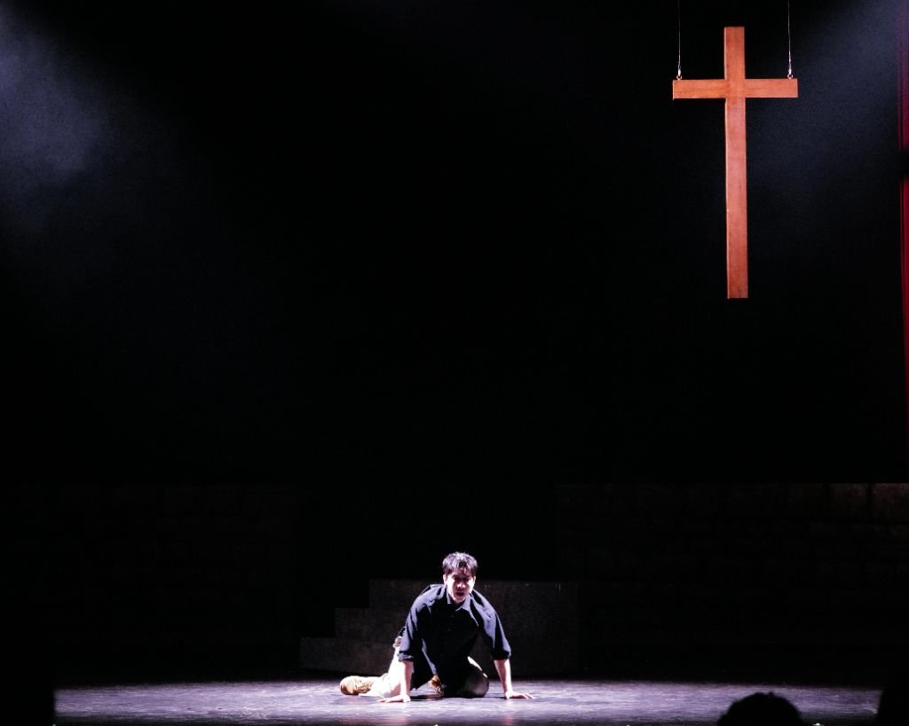

ABOUT
성경 속 마가의 이야기,
성경 속 마가의 이야기,
찬양으로 만나다
뮤지컬 '마크'는 신약성경 마가복음의 저자 마가의 이야기에서 영감을 얻어 제작된 워십 뮤지컬입니다.
바울과 바나바의 1차 전도여행 속에서 실패와 좌절을 겪지만, 사랑과 용서를 통해 복음의 전달자로 성장하는 마가의 여정을 담고 있습니다.
'가시나무', '축복송', '원하고 바라고 기도합니다' 등 교회에서 오래도록 사랑받아 온 CCM 찬양들로 넘버를 구성한 CCM 주크박스 뮤지컬입니다.
무대 위의 찬양과 말씀이 관객과 하나 되어, '뮤지컬로 드리는 예배'를 완성합니다. 평범한 사람이 하나님께로 나아가는 마가의 성장 과정이 우리 모두에게 위로가 되기를 소망합니다.

공연 하이라이트
